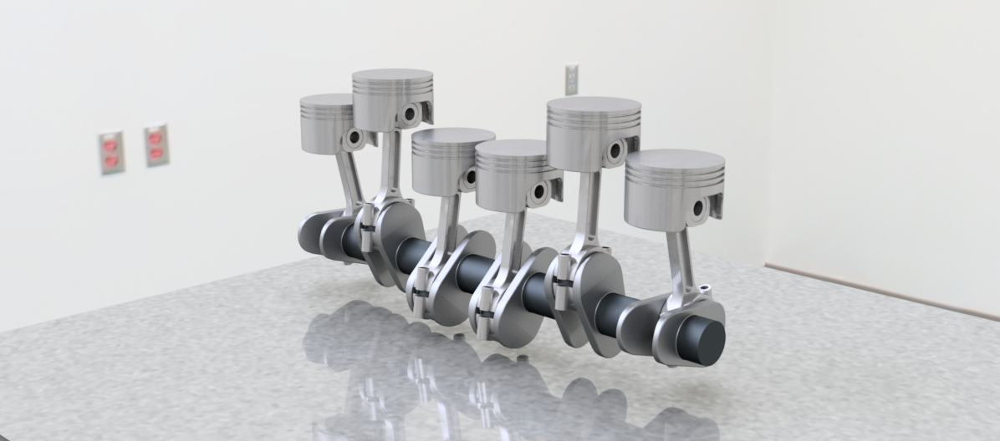
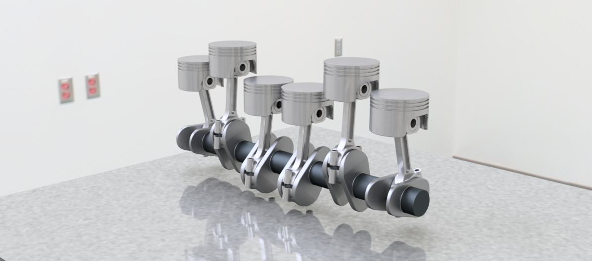

Bicycle
Este es un proyecto en el cual el objtivo era alcanzar con el mayor detalle un objeto, en este caso una bicicleta. Se tomó en consideración una bicicleta de montaña y a partir de ahí se crearon pieza por pieza, hasta llegar a una bicicleta real. Dando la posibilidad de imprimirlo en 3D y armarlo.


Green Mont
Este proyecto fue parte de un concurso por darle una identidad corporativa a un restauran escolar, este iba desde el render, el nombre, el logo hasta un jingle que pudiera generar el marketing para atraer clientes.


Pistón
En este proyecto el objetivo era unicamente observar las habilidades de los que participamos en el proyecto, en este destacamos tan solo tres personas siendo yo una de ellas.
 

ReciclaPET
Este ha sido tal vez el proyecto más tardado, con una duración de más de un mes. El proyecto se llevó desde la idea hasta el funcionamiento de la máquina, realizamos todo, las medidas, la impresión e incluso el sistema electrónico. Con este proyecto concursamos como equipo para obtener un premio monetario en el estado.
.png)